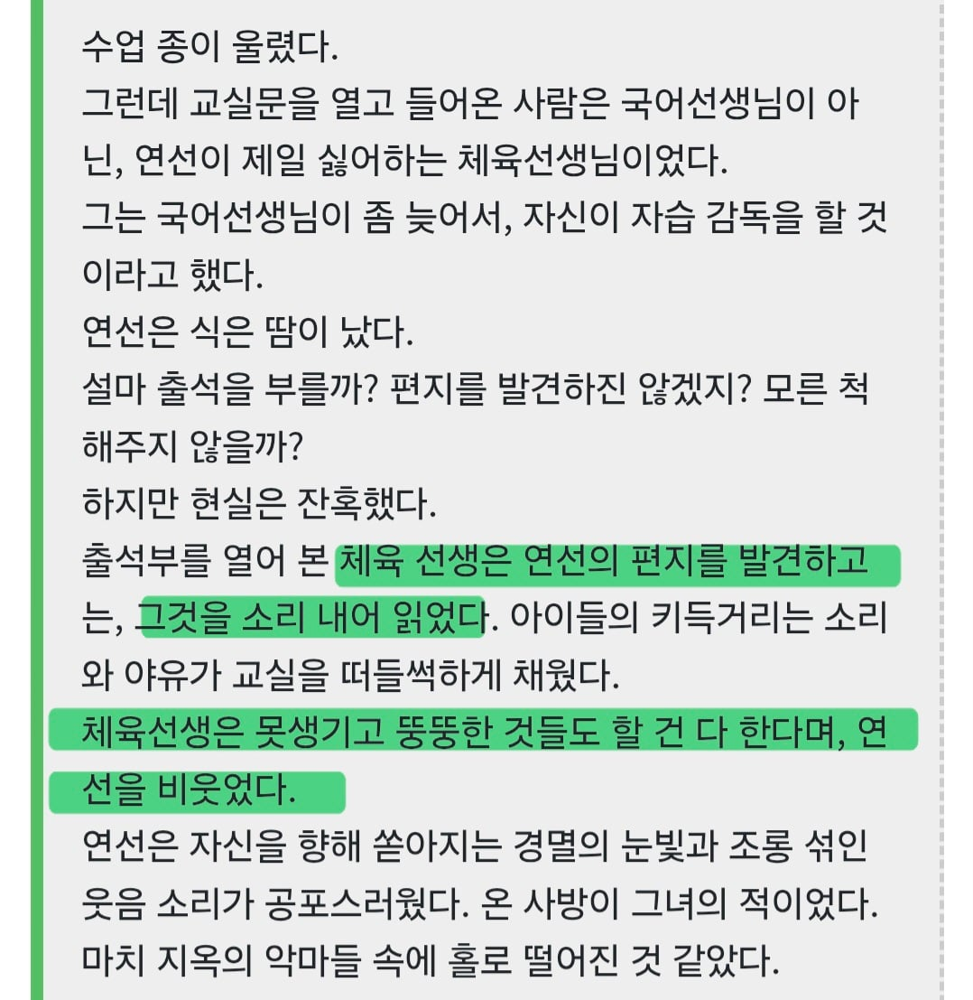
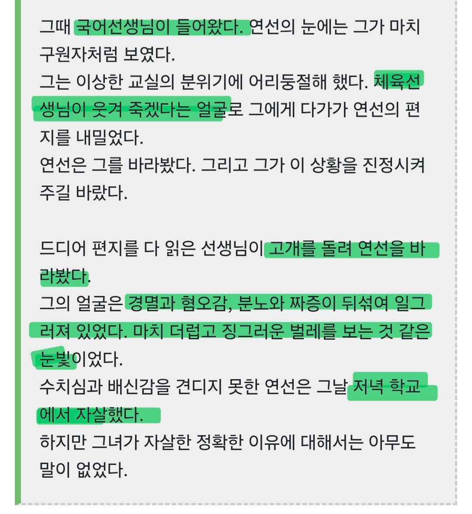

화이트데이에 등장하는 '출석부 귀신'인데.... 죽은 이유가 적힌 괴담을 보면 생전 이름은 '연선'으로
사건은 자신한테 잘 대해주고 위로해주던 국어선생한테 '고백 편지'를 출석부에 넣은걸로 시작됨.

문제는 국어선생이 지각을 해서 체육선생이 자습 감독으로 들어와
그 고백 편지를 보고 공개 망신을 줬는데다...

심지어 그 국어선생도 연선한테 혐오하는 감정을 드러내서 스스로 목숨을 끊었다는 스토리임....
근데 작중 나오는 문서에서 체육선생도 "양호선생을 짝사랑한다"는 설정도 있는데다...
사고를 친 체육선생이 작중 시점인 2001년에 무사히 재직 중이라고 하는데..
지금이었다면 진짜 파면당해도 할말없는 짓임.... ㄹㅇ

라이라이 차차차